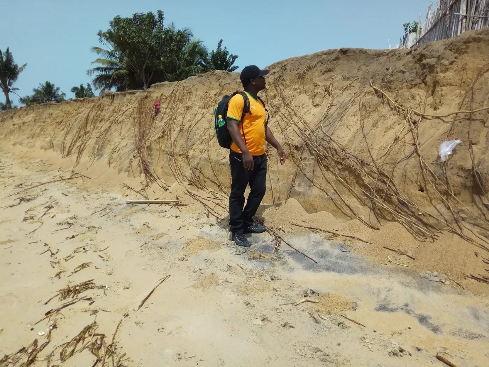
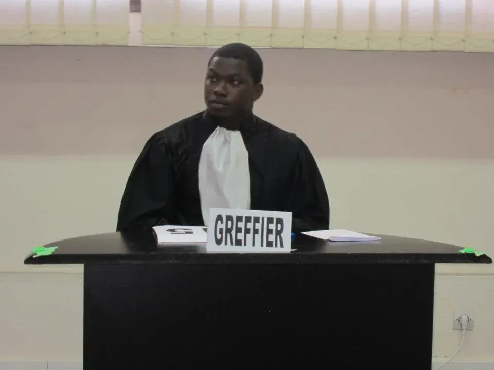

Récit 1 · Trajectoire
D’une côte à l’autre
Côte d’Ivoire, Europe, Méditerranée, golfe de Guinée : quatre rivages, une même question.
Une côte
Tout a commencé par une côte : celle de la Côte d’Ivoire. À l’Université Félix Houphouët-Boigny, mon Master II / DEA de droit public, spécialité droit de l’environnement et du littoral, m’a conduit à étudier la préservation de la zone côtière en droit ivoirien. Le mémoire date de l’année 2013–2014 ; le diplôme, de la session de mars 2015. J’y ai appris à regarder le littoral non comme une marge, mais comme un espace stratégique, où se rencontrent protection de l’environnement, aménagement et gouvernance.
En 2016 et 2017, la question a quitté les livres. Aux événements parallèles du sommet de l’Union africaine sur la sécurité et la sûreté maritimes, à Lomé ; au Port autonome d’Abidjan, lors d’un séminaire régional sur l’accord du Cap de 2012 ; à la COP12 de la Convention d’Abidjan ; au dialogue des politiques de la Commission économique pour l’Afrique sur les ressources et les activités maritimes : j’étais d’abord là pour écouter. Deux fois, j’ai aussi tenu un rôle. En mars 2017, j’ai été rapporteur d’un atelier national sur la résilience des zones côtières de la Côte d’Ivoire, à la Banque mondiale. En avril, j’ai accompagné une sortie de terrain à Grand-Lahou comme assistant du coordonnateur du Programme national de gestion de l’environnement côtier.

À Grand-Lahou, le trait de côte n’était plus une notion : c’était un front de sable entaillé, aux racines mises à nu.
Des institutions
En 2018, une bourse d’études de la République de Côte d’Ivoire m’a permis de poursuivre en droit international de la mer à Aix-Marseille Université. L’Europe a d’abord été pour moi une géographie d’institutions. À l’automne, le colloque final du programme de recherche Human Sea, à Nantes ; en décembre, la COP24, à Katowice, comme participant accrédité.
D’avril à juin 2019, j’ai passé trois mois au Tribunal international du droit de la mer, à Hambourg, en stage et avec une bourse. En appui à son Service juridique, j’y ai mené des recherches de fond et suivi deux affaires de mesures conservatoires : une juridiction internationale au travail, vue de l’intérieur. En juin, j’ai assisté aux audiences de la Cour internationale de Justice dans l’affaire Ukraine c. Fédération de Russie. En janvier 2020, sur sélection et avec une bourse, j’ai suivi les Cours d’hiver de l’Académie de droit international de La Haye.
Retour au golfe
Le parcours n’a pas quitté l’Afrique pour autant. Du 1er avril au 31 juillet 2020, un stage de quatre mois au Secrétariat permanent du Comité interministériel de l’Action de l’État en Mer de Côte d’Ivoire a fait de l’action de l’État en mer, que je n’avais approchée qu’au fil de rencontres et de séminaires, un objet de travail quotidien. Il portait sur ses enjeux et sur l’application du droit international de la mer dans le golfe de Guinée.
Une mer partagée
La Méditerranée a donné au parcours son épaisseur territoriale. Avec le M2 COAST, en 2023–2024, j’ai appris à lire un rivage sur le terrain autant que dans les textes : aires marines protégées, risques côtiers, usages qui se disputent un même espace. Les colloques de l’INDEMER à Monaco, en 2023 et en 2025, l’atelier régional de MedPAN entre La Londe-les-Maures et Porquerolles, en 2024, le colloque des Académies de marine européennes à Marseille, en 2025, puis celui du Réseau francophone de droit international à Nice, en 2026, ont nourri cette lecture.
Là où les rives se rejoignent
Le golfe de Guinée est l’espace où ces rives se rejoignent dans mon travail. Ma recherche la plus structurante y porte sur l’application du droit international de la mer à la sécurisation des espaces et activités maritimes, à l’échelle de seize États. En juillet 2026, c’est à Abidjan, à l’ERSUMA, que j’ai soutenu mon travail de fin de formation en médiation OHADA : un retour au point de départ, avec d’autres outils.
Pour aller plus loin
- Expériences — Atelier national, 2017 · Grand-Lahou, 2017 · Tribunal international du droit de la mer, 2019 · Académie de La Haye, 2020 · Action de l’État en Mer, 2020 · ERSUMA, 2026 · Toutes les participations
- Travaux — La zone côtière en droit ivoirien · Aires marines protégées et climat · La recherche sur le golfe de Guinée
- Photographies — Lomé, 2016 · COP12, 2017 · Hambourg, 2019 · Monaco, 2025 · Nice, 2026
Récit 2 · Disciplines
Du droit à l’action
Droit public, mer, littoral, médiation, innovation : moins une suite de diplômes qu’une manière d’ajouter, à chaque étape, le regard qui manquait.
Ma première expérience d’une procédure a été un rôle de compétition. En 2012, à Abidjan, en finale du concours international Génies en Herbe OHADA, puis à Yamoussoukro, lors d’un concours interuniversitaire de plaidoirie en droits de l’homme, j’ai tenu le rôle de greffier : un rôle fictif, propre à l’exercice.

Le droit public, puis le littoral
Ma formation a commencé par le droit public, à l’Université Félix Houphouët-Boigny, avant de se resserrer sur le droit de l’environnement et du littoral. L’intérêt pour la côte était plus ancien : deux engagements associatifs, à l’APELCI et à l’ONG Protégeons Notre Littoral, l’avaient accompagné très tôt. Le mémoire sur la zone côtière ivoirienne en a fait une question de recherche : comment le droit organise-t-il un espace exposé, convoité et fragile ?
Représenter, organiser
Ces années ont aussi été celles des responsabilités collectives. À l’Association des Étudiants Juristes de Côte d’Ivoire, j’ai été secrétaire général adjoint du Bureau exécutif national de février à juin 2013, puis secrétaire général par intérim jusqu’en décembre. À l’université, j’ai été délégué des étudiants de Master II Recherche / DEA de droit public de février 2014 à octobre 2015, délégué général des étudiants de droit de juin 2014 à juin 2015 et membre du Conseil national des délégués de juin 2014 à mai 2015. J’y ai appris à porter une parole collective et à la faire entendre d’une institution.
Des institutions à la mer
Le littoral m’a conduit vers la mer, et la mer vers les institutions qui la gouvernent. Hambourg, La Haye, puis, en Côte d’Ivoire, le Secrétariat permanent de l’Action de l’État en Mer ont relié deux échelles que l’on étudie souvent séparément : la norme internationale et l’administration chargée de l’appliquer.
Le terrain, avec la géographie
Le droit seul ne suffisait pas à lire un rivage. Le Master Géographie, Aménagement, Environnement et Développement et le M2 COAST (2023–2024) m’ont appris à observer avant de qualifier : les usages, les vulnérabilités, les trajectoires d’adaptation. En novembre 2023, les sorties de terrain du master m’ont mené de la Direction interrégionale de la mer Méditerranée et du Parc national des Calanques aux vestiges du barrage de Malpasset, à l’embouchure de l’Argens à Saint-Aygulf, puis au littoral de l’Estaque. En 2024, un stage de recherche financé dans le cadre d’AMIDEX et du projet PROTEUS a porté sur les aires marines protégées face au réchauffement climatique en Méditerranée : une recherche appliquée, appuyée sur les documents-cadres d’aires marines protégées françaises de Méditerranée.
La médiation
La médiation est née d’une autre question : comment un différend peut-il trouver une issue sans juge ? Elle a pris trois formes. Une formation d’abord, avec un DESU dont le travail porte sur la médiation dans le commerce international (2021). Un engagement ensuite, comme secrétaire de la Clinique de la médiation d’Aix-Marseille Université (2021–2022). Une formation encore, en médiation OHADA à l’ERSUMA (2025–2026), dont le travail final, soutenu à Abidjan en juillet 2026, porte sur l’indépendance et l’impartialité du médiateur. Ces formations ne font pas de moi un médiateur en exercice ; elles m’ont donné une méthode et un objet de recherche.
La pratique, les flux, l’innovation
La pratique juridique est venue avec six mois en cabinet d’avocat, à Paris, d’octobre 2022 à avril 2023, dans le cadre du Master 2 Droit international des affaires de la FACO Paris. Le parcours compte aussi un Master 2 Logistique internationale, obtenu au Groupe EDHEC-Abidjan : un autre regard sur le port, celui des flux.
L’innovation est venue avec un DESU dont le travail porte sur l’innovation face à la sécurisation des espaces et activités maritimes (2022) ; l’entrepreneuriat, avec PÉPITE Provence, où j’ai d’abord été accompagné comme étudiant-entrepreneur avant de représenter le dispositif auprès d’autres publics étudiants, entre 2024 et 2026. L’université, enfin, je l’ai connue de l’intérieur, par des emplois étudiants à Aix-Marseille Université : secrétariat d’examen pour la Mission Handicap, surveillance d’épreuves, accueil à la scolarité.
Mis bout à bout, ces chemins pourraient sembler dispersés. Ils répondent à une même exigence : ne laisser aucune discipline dire seule ce qu’est un rivage, un différend ou une institution.
Pour aller plus loin
- Expériences — Génies en Herbe OHADA, 2012 · Concours de plaidoirie, 2012 · Responsabilités et engagements · Stage en cabinet d’avocat · Emplois étudiants
- Travaux — Médiation dans le commerce international · Indépendance et impartialité du médiateur · Innovation et sécurisation maritime · Terrains
- Photographies — Abidjan, 2012 · Calanques, 2023 · Malpasset et Saint-Aygulf, 2023 · L’Estaque, 2023
Récit 3 · Portrait intellectuel
Chercher, comprendre, agir, impacter
Une manière de travailler, en quatre verbes. Ils décrivent une méthode plus qu’une promesse.
Je me méfie des réponses qui arrivent avant la question. Ma manière de travailler tient en quatre temps.
Chercher
Tout commence par une question bien posée. Dans ma recherche sur le golfe de Guinée, elle s’énonce ainsi : à quelles conditions le droit international de la mer peut-il produire des effets vérifiables dans la sécurisation des espaces et activités maritimes ? Chercher, c’est ensuite examiner les sources sans leur faire dire plus qu’elles ne disent. Ma bibliothèque de travail en garde la trace : chaque référence y porte un statut de vérification, et seules celles dont la notice est confirmée sont présentées publiquement.
Comprendre
Une norme ne vit jamais seule. Je la suis de la règle à la compétence, puis à la réception nationale, à l’institution, à la capacité, au contrôle et à la preuve. Et je la confronte à un espace réel — un port, une côte, une aire marine protégée —, avec ses usages, ses vulnérabilités et ses acteurs. C’est le rôle du terrain : un front d’érosion à Grand-Lahou, une plage contrainte par des enrochements à l’Estaque rappellent qu’une règle s’applique toujours quelque part. Plutôt que de conclure trop vite à l’ineffectivité d’une règle, je cherche le point exact où la chaîne se rompt.
Agir
Comprendre n’a de sens que si cela se transmet. Agir, pour moi, c’est d’abord restituer : une note, une synthèse, un travail de recherche, un échange structuré. C’est ce que demandaient les recherches menées en appui au Service juridique du Tribunal international du droit de la mer, le travail en cabinet d’avocat ou les présentations de PÉPITE Provence devant des publics étudiants. Dans le même esprit, j’ai conçu trois modules d’enseignement de trois heures ; ils n’ont pas encore été dispensés.
Impacter
Je n’écris pas ici de bilan. Impacter désigne une intention : que l’analyse serve à quelqu’un — une institution qui doit décider, un étudiant qui doit structurer son travail, un territoire qui doit arbitrer entre ses usages. C’est là que se rejoignent la recherche, la transmission et les compétences que je peux mettre au service d’un projet. Je ne revendique pas d’effets que je ne peux pas démontrer ; je cherche à produire des travaux assez clairs pour qu’ils puissent en avoir.
Pour aller plus loin
- Méthode — La question de recherche · La chaîne de la norme au résultat · Les problèmes traités
- Transmission — Les trois modules conçus · La bibliothèque de travail
- Collaborer — Les compétences mobilisables · Missions & contributions